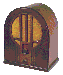

Välkommen till Radio Hôla!
Sedan starten har vi sänt direkt från vår studio i Hôlas nästan nya radiohus, som ligger så gott som nästan mitt i utkanten av Hôla. Med örat mot etern och hjärtat i bypulsen erbjuder vi en blandning av musik och mångahanda intressanta program.
Vad musik anbelangar spelar vi allt från Hairsmoke till Curt III - allt från rock till... inte rock. Programutbudet är extremt brett och vi sänder, för att nämna några exempel: realityradio, dokumentärer, frågesport, livesågning med Torbjernt, och intervjuer - både på byn och i studion. I Hôla blir det som bekant aldrig tråkigt och det blir det inte i den hôlianska etern heller. Oavsett om du lyssnar under morgonkaffet, bordet eller på Murres så finns vi där – med värme, humor och det ena och det andra.
Vi tror på analog själ i en digital värld. Välkommen in i värmen. Radio Hôla - mer lokalt kan det inte bli!
🶠Nu spelas: laddar...
Våra stolta sponsorer:
- Dustmanns Däck & Dojor - Vi fixar sulorna till dig och din bil!
- KBs gym
- Bullens snabbköp
- Murres